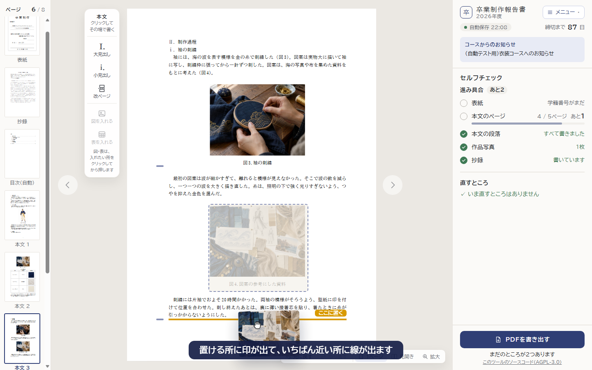
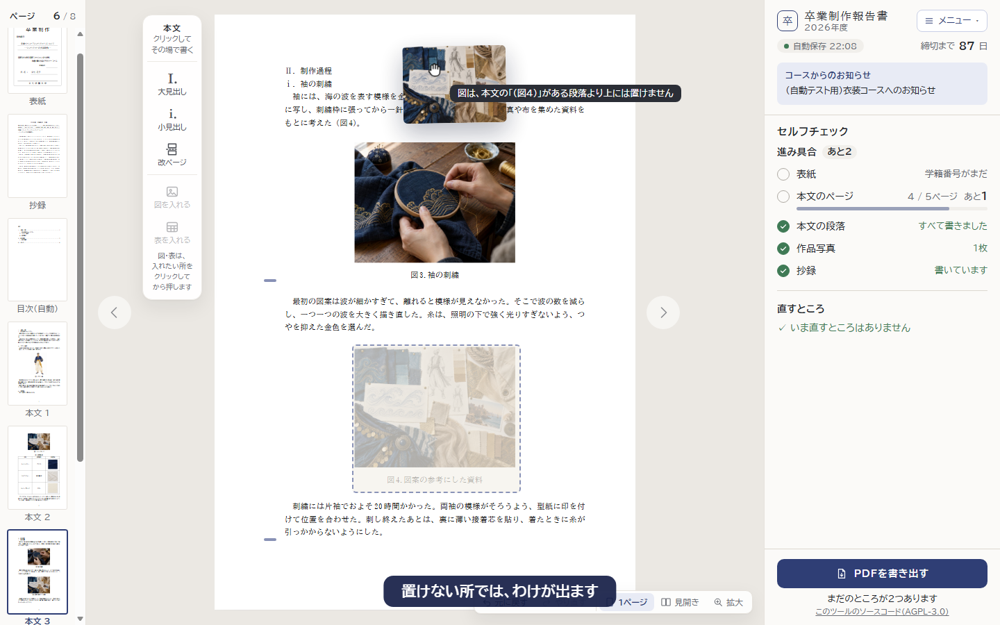
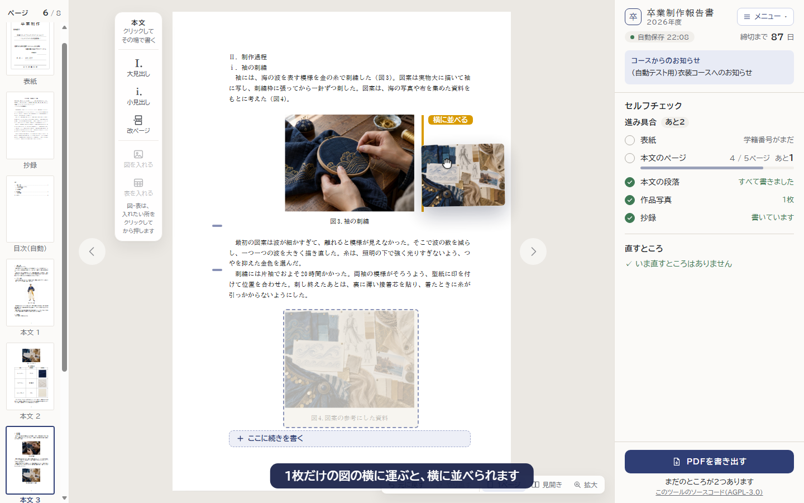
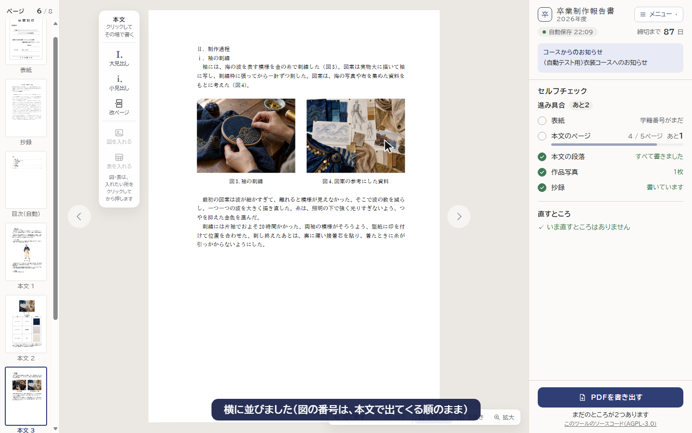
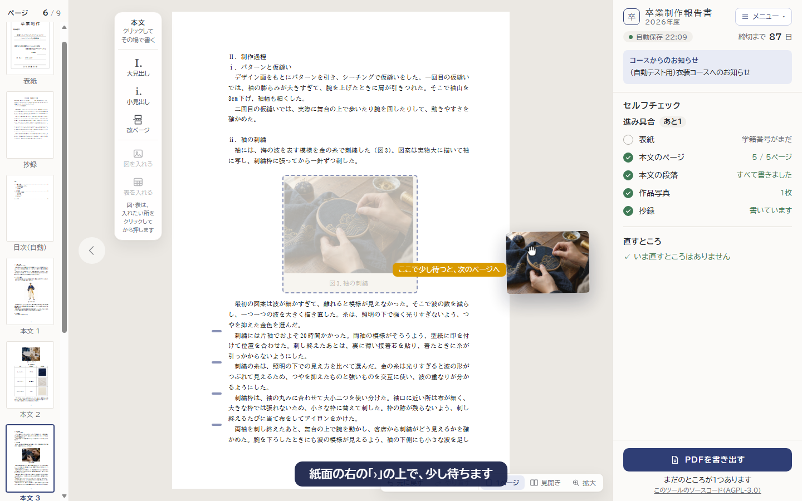
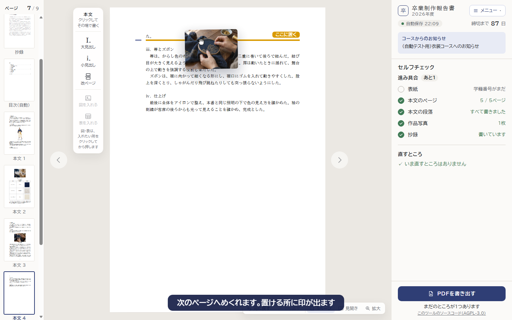
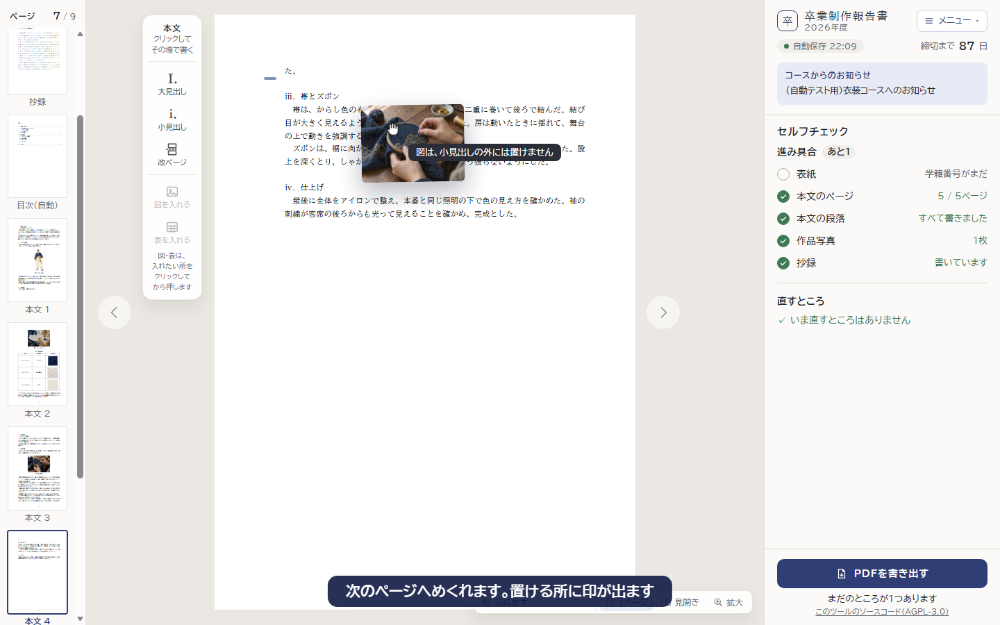
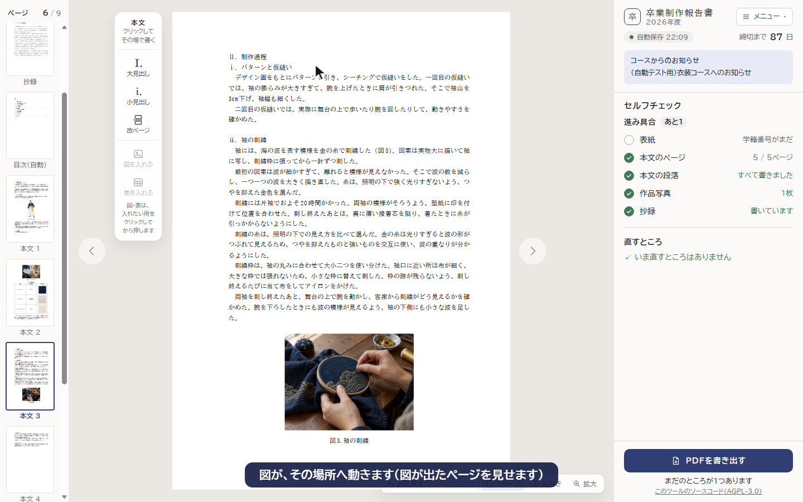

「上へ」「下へ」は今のまま残し、つかんで運ぶこともできるようにします。置ける範囲は今の決まりのまま（本文の「（図n）」がある段落より下、小見出しの中、図の順は本文で出てくる順）です。
図を押したまま少し待つと、輪が一周して、図をつかめます。元の所は点線の枠で薄くなり、置ける所に左の余白の印が出て、いちばん近い所に金色の線

本文の「（図4）」がある段落より上などでは、線は光らず、わけを出します（離しても動きません）

1枚だけの図の右に運ぶと、縦の線と「横に並べる」が出ます

離すと図が動き、少しの間、金色の枠で光ります。間違えたら「元に戻す」

つかんだまま紙面の右の「›」（前のページなら左の「‹」）に運ぶと、「ここで少し待つと、次のページへ」と出ます

つかんだまま次のページへめくれ、そのページで置ける所に印が出ます

次の小見出しより下では、「図は、小見出しの外には置けません」と出ます

離すと図が動き、図が出たページを見せて光らせます（ページの下に入りきらない図は、次のページの頭へ）

見開きで表示していれば、隣のページへはそのまま運べます。スマホは今までどおり「上へ」「下へ」で動かします。